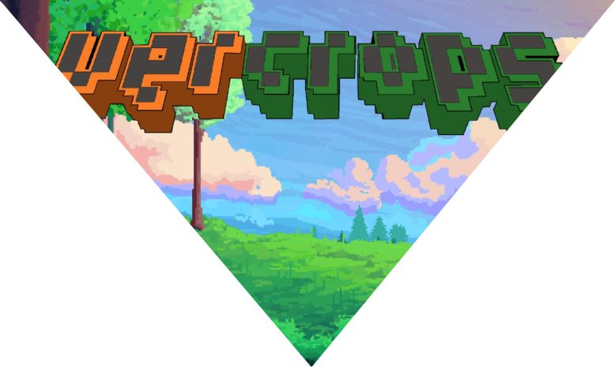

Reglas del juego

Se reparten 3 cartas al azar a cada jugador (todas las cartas están mezcladas ya sean positivas y negativas) y la primera carta que se debe de lanzar a cada jugador deberá ser un cultivo.

La primera carta (cultivo) estará visible, las otras 3 cartas solo serán visibles para el jugador, pero no hacia los demás.
Solo se verá en el tablero las cartas que han bajado los jugadores.

anterior
siguiente
Habrá dos pilas de cartas, una donde tomarás una en cada turno, y otra las cartas que ya se utilizaron y las que desechas.